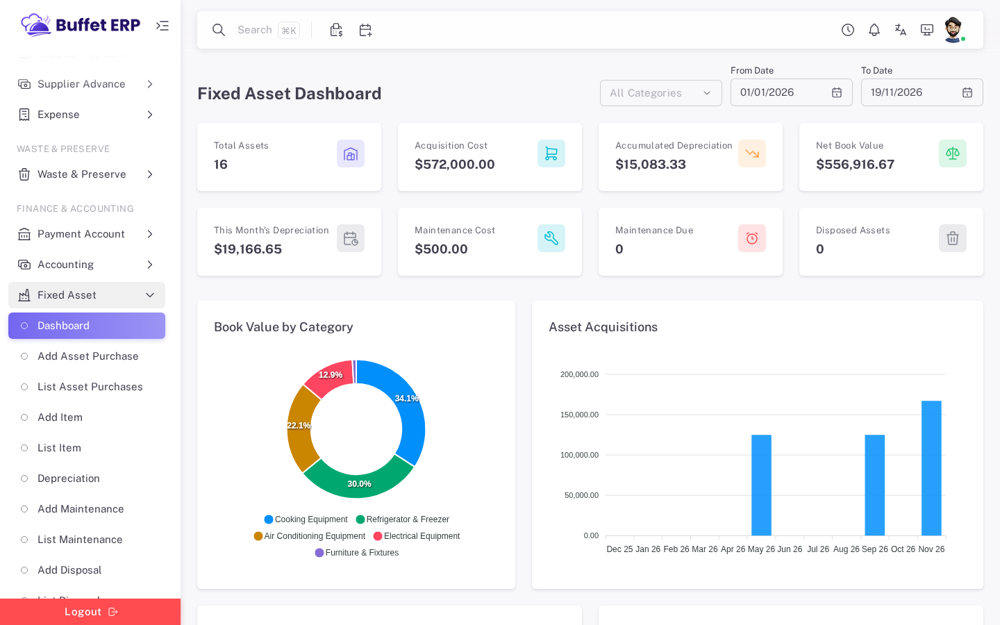
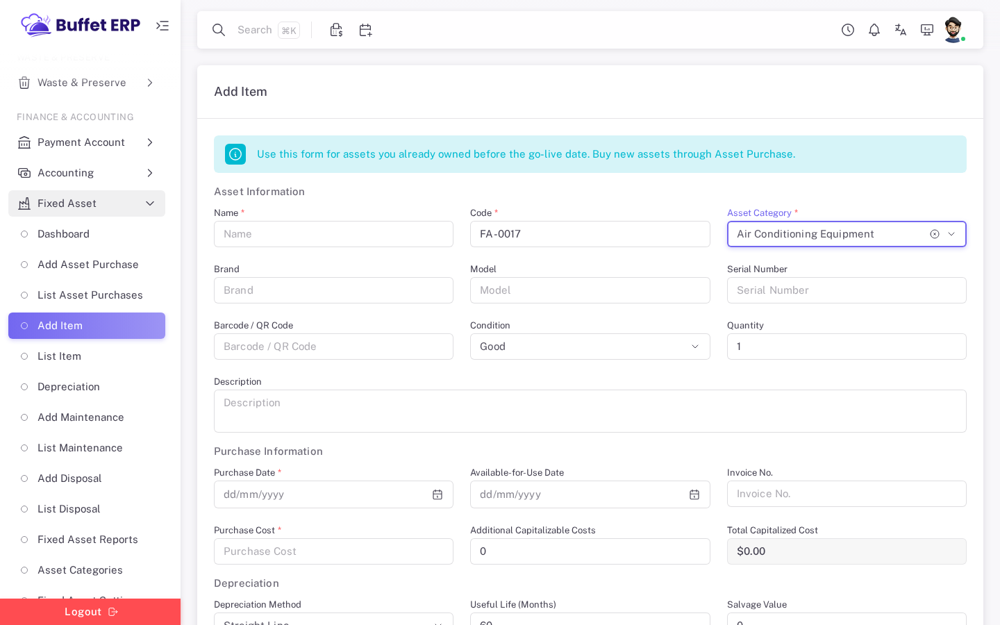
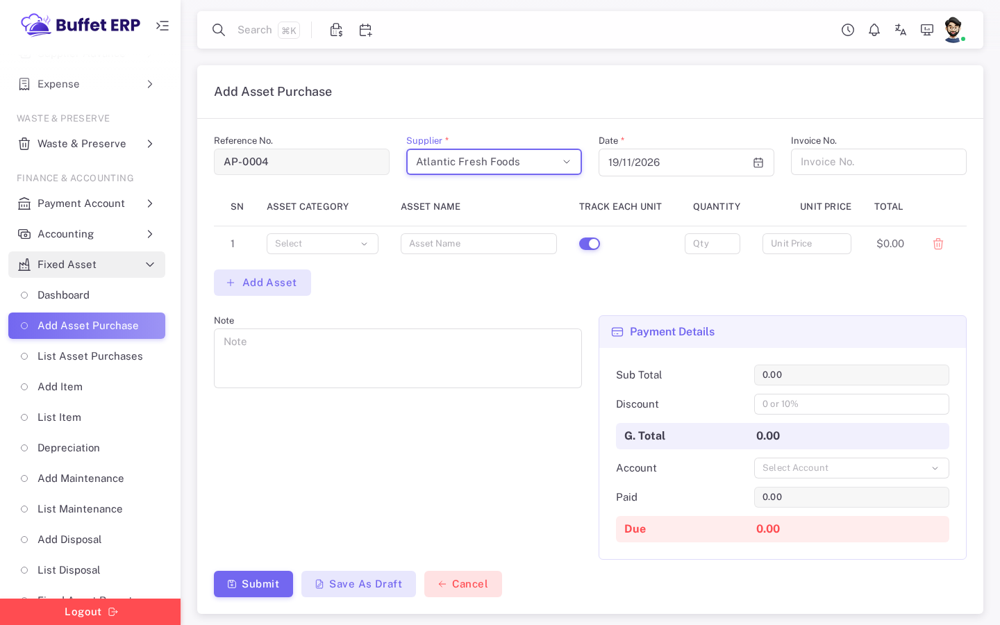
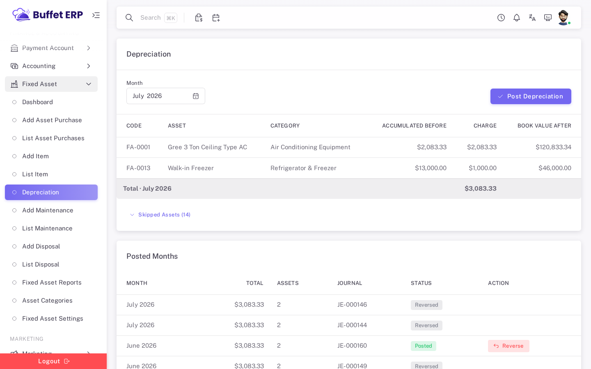
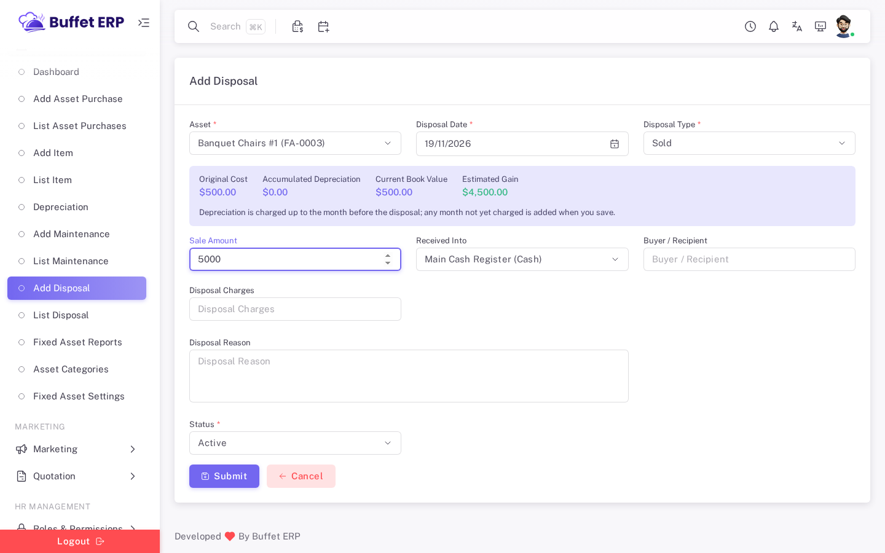

Fixed Assets
Fixed asset dashboard, categories, purchases, items, depreciation, maintenance and disposal.
Fixed assets are things the restaurant owns and uses for years: kitchen equipment, furniture, freezers, computers. Set up Fixed Asset Settings and at least one entry in Asset Categories first. The accounts a category needs come from the Chart of Accounts.

Fixed Asset Dashboard
Fixed Asset > Dashboard
Choose a category under All Categories and a period with From Date and To Date. The cards show:
- Total Assets: number of active assets.
- Acquisition Cost, Accumulated Depreciation and Net Book Value (cost minus accumulated depreciation) of the active assets.
- This Month's Depreciation.
- Maintenance Cost in the chosen period.
- Maintenance Due: assets whose next maintenance date is within the next 7 days or already passed.
- Disposed Assets: number of disposed assets.
Charts: Book Value by Category, Depreciation Trend, Maintenance Cost Trend and Asset Acquisitions (last 12 months).
Asset Categories
Fixed Asset > Asset Categories
Click Add Category, fill in the form and click Save.
| Field | Required? | What to enter | Example |
|---|---|---|---|
| Name | Yes | The group of assets. | Kitchen Equipment |
| Code | Yes | A short code; each category needs its own. | KIT |
| Parent Category | No | A bigger group this one belongs to. | Equipment |
| Asset Account | Yes | The account that holds these assets' cost (a Non-current Assets account). | Kitchen Equipment |
| Accumulated Depreciation | Yes | The account that collects their depreciation. | Accumulated Depreciation |
| Depreciation Expense Account | Yes | The expense account for depreciation. | Depreciation Expense |
| Depreciation Method | Yes | Straight Line or Declining Balance. | Straight Line |
| Useful Life (Months) | Yes | 1 to 600 months. | 60 |
| Salvage Value (%) | No | 0 to 100: what is left at the end, as a % of cost. | 5 |
| Description | No | Notes. | Stoves and ovens |
| Status | Yes | Active or Inactive. | Active |
When you choose a category on an asset, its Depreciation Method and Useful Life (Months) are copied to the asset, and the salvage value is worked out from its percentage if you have not entered one.
Assets you already owned
Fixed Asset > Add Item
The form opens with the note "Use this form for assets you already owned before the go-live date. Buy new assets through Asset Purchase." For equipment you buy now, use Fixed Asset > Add Asset Purchase instead.

| Field | Required? | What to enter | Example |
|---|---|---|---|
| Name | Yes | What the asset is. | Gas range, 4 burners |
| Code | Yes | Filled in for you (from the Asset Code Prefix); each asset needs its own. | FA-0001 |
| Asset Category | Yes | Its category. | Kitchen Equipment |
| Brand, Model, Serial Number, Barcode / QR Code | No | From the label on the equipment. | — |
| Condition | No | New, Good, Fair or Poor. | Good |
| Quantity | Yes | A whole number, 1 or more. | 1 |
| Purchase Date | Yes | When it was bought; not in the future. | — |
| Available-for-Use Date | Yes | When it was first used; not before the Purchase Date. | — |
| Invoice No. | No | The supplier's invoice number. | — |
| Purchase Cost | Yes | The price, more than 0. | 120,000 |
| Additional Capitalizable Costs | No | Delivery or installation. | 10,000 |
| Total Capitalized Cost | — | Worked out: Purchase Cost + Additional Capitalizable Costs. | 130,000 |
| Depreciation Method, Useful Life (Months) | Yes | Copied from the category; you can change them. | Straight Line, 60 |
| Salvage Value | No | What it is worth at the end of its life. | 6,500 |
| Depreciation Start Date | No | "Optional. Depreciation starts the month after the asset is put into use." | — |
| Depreciation to Go-live | No | Depreciation the asset already had before the go-live date. Shown only when the Purchase Date is before the go-live date (or no go-live date is set). | 24,700 |
| Assigned Employee | No | Who looks after it. | — |
| Note | No | Up to 500 characters. | — |
| Status | Yes | Active or Inactive. | Active |
Click Submit. All assets are in Fixed Asset > List Item. Once depreciation has been posted for an asset, the form says "Depreciation is already posted for this asset; its cost and depreciation settings can no longer change."
Buying New Equipment (Asset Purchase)
Fixed Asset > Add Asset Purchase
Use this for equipment you buy now. Saved purchases are in Fixed Asset > List Asset Purchases.

- Choose the Supplier and check the Date. Enter the Invoice No. if you have one.
- For each asset fill in a line: Asset Category, Asset Name, Unit Price and Quantity (a whole number). The Total is worked out. Turn on Track each unit to keep each unit as a separate asset. Click Add Asset for another line.
- If a unit price is below the Capitalization Threshold in Fixed Asset Settings, the line shows "Below the capitalization threshold: consider recording it as an expense."
- Under Payment Details: enter a Discount if any (amount or %), check the G. Total, choose the Account you pay from and the Paid amount. What is not paid shows as Due and is owed to the supplier.
- Click Submit, or Save as Draft to finish later.
Posting Monthly Depreciation
Fixed Asset > Depreciation
Depreciation spreads an asset's cost over its useful life. Post it once a month.

- Choose the Month.
- The table shows each asset to charge: Code, Asset, Category, Accumulated Before, Charge and Book Value After. A charge that covers earlier months that were never posted shows "includes catch-up for N months".
- Depreciation starts the month after the asset's Available-for-Use Date.
- Assets that are not charged are listed under Skipped assets (click it to open the list), each with its reason: not set up, not in use yet, already charged, useful life ended or fully depreciated.
- Click Post Depreciation. The month appears under Posted Months.
- To undo a month, click Reverse on it under Posted Months, write the Reason and click Reverse. Only the latest posted month can be reversed.
Maintenance
Fixed Asset > Add Maintenance
| Field | Required? | What to enter | Example |
|---|---|---|---|
| Fixed Asset Item | Yes | The asset that was serviced. | FA-0001 Gas range |
| Maintenance Date | Yes | When it was done; not in the future. | — |
| Maintenance Type | No (starts as Routine) | Routine, Repair, Replacement, Inspection or Emergency Repair. | Repair |
| Cost | Yes | What it cost, more than 0. | 3,500 |
| Payment Account | Yes | The account you paid from. | Cash |
| Service Provider, Reference No. | No | Who did the work and their bill number. | — |
| Responsible Person | No | The employee or admin in charge. | — |
| Next Maintenance Date | No | Must be after the Maintenance Date. | — |
| Note | No | Up to 500 characters. | — |
| Status | Yes | Active or Inactive. | Active |
Click Submit. Records are in Fixed Asset > List Maintenance.
Disposal (selling or retiring an asset)
Fixed Asset > Add Disposal

- Choose the Asset. The form shows its Original Cost, Accumulated Depreciation and Current Book Value.
- Choose the Disposal Date. "Depreciation is charged up to the month before the disposal; any month not yet charged is added when you save."
- Choose the Disposal Type: Sold, Damaged, Lost, Scrapped, Written Off, Donated or Returned to Supplier.
- Only Sold, Scrapped and Returned to Supplier bring money in. Enter the Sale Amount (Sold), Scrap Value Received (Scrapped) or Amount Credited by Supplier (Returned to Supplier), and the Received Into account. For Returned to Supplier also choose the Supplier.
- Optional: Disposal Charges and the Charges Paid From account; Buyer / Recipient (or Reference for a return); Disposal Reason.
- Check the result: proceeds minus disposal charges minus current book value, shown as Estimated Gain or Estimated Loss.
- Click Submit. The asset becomes Disposed. Records are in Fixed Asset > List Disposal.
Fixed Asset Settings
Fixed Asset > Fixed Asset Settings
- Asset Code Prefix (required): the start of new asset codes, for example FA-. Letters, numbers, - _ and / only.
- Default Depreciation Method: Straight Line or Declining Balance.
- Default Useful Life (Months): 1 to 600.
- Default Salvage Value (%): 0 to 100.
- Capitalization Threshold: "A purchase line priced below this shows a hint to record it as an expense instead."
- Depreciation Start Policy: shown only, cannot be changed: "Full month from the month after the asset is put into use".
Click Submit.
Fixed Asset Reports
Fixed Asset > Fixed Asset Reports
Choose the Report, set the filters and click Filter. Every report except Fixed Asset Reconciliation also has Category and Search ("Code, name or serial no.").
| Report | Columns | Other filters |
|---|---|---|
| Fixed Asset Register | Code, Name, Category, Assigned Employee, Serial Number, Purchase Date, Cost, Accumulated Depreciation, Book Value, Status | Status (Active, Disposed, Inactive) |
| Net Book Value | Code, Name, Category, Cost, Accumulated Depreciation, Book Value | Status |
| Asset Acquisitions | Purchase Date, Code, Name, Category, Reference, Supplier, Quantity, Cost | From Date, To Date, Status |
| Depreciation Schedule | Code, Name, Month, Charge, Status (Posted or Projected) | From Date, To Date |
| Depreciation Summary | Month, Category, Assets, Depreciation | From Date, To Date |
| Maintenance Report | Date, Code, Name, Maintenance Type, Service Provider, Reference No., Cost, Next Maintenance Date | From Date, To Date |
| Disposal Report | Date, Code, Name, Disposal Type, Cost, Accumulated Depreciation, Book Value, Amount Received, Disposal Charges, Gain / Loss | From Date, To Date |
| Fixed Asset Reconciliation | Account, Register Total, Ledger Balance, Difference (a difference is shown in bold) | As Of |
What happens next
- Buying, maintaining, depreciating and disposing of assets write their accounting entries by themselves. Maintenance goes to Repairs & Maintenance; a disposal result goes to Gain on Asset Disposal or Loss on Asset Disposal.
- Money paid or received moves the payment account you chose.
Common problems
| Message | What to do |
|---|---|
| "This category code is already used." | Give the category another Code. |
| "Choose a fixed asset account (Non-current Assets)." | Pick an Asset Account from the Non-current Assets group. |
| "The useful life can be at most 600 months." | Enter 600 or less. |
| "Buy new assets through Asset Purchase." | Use Add Asset Purchase for new equipment. |
| "The Payment Account is required when the asset is sold." | Choose the Received Into account. |
| "This item already added in the disposal list." | The asset is already disposed. |
| "Only the latest posted month (…) can be reversed." | Reverse the newest month first. |
| "Give a reason for the reversal." | Write a Reason before clicking Reverse. |
| "No asset has depreciation to charge for this month." | Nothing to post; check Skipped assets for the reasons. |